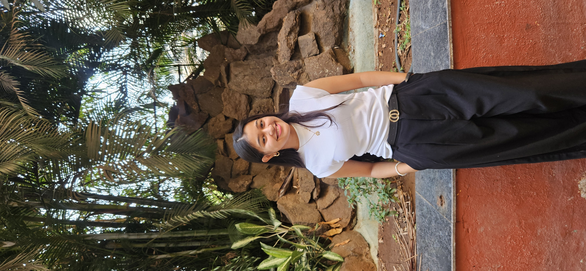

Intern @ Arvillium
Working on backend features, AI integration, automation, dashboards, and runtime monitoring.
Aditi Rathi
Computer Science Engineering student working with AI, backend development, automation, computer vision, and assistive technology.

A Tiny Force With Massive Potential
CSE’26 | Intern @ Arvillium | AI/ML, Backend Systems, Computer Vision And Automation
About Me
Hi! I'm Aditi Rathi, a Computer Science Engineering student passionate about building tech that solves real-world problems. I enjoy exploring how intelligent systems can be built using code, data, and creativity.
Fun Fact: Powered by caffeine, curiosity, code, and cat cuddles.
Working on backend features, AI integration, automation, dashboards, and runtime monitoring.
Interested in AI/ML, computer vision, backend systems, and Edge AI.
Love building projects with real-world impact, not just demo screens.
Writer, creator, social media active, and proudly a cat person. 🐱
Selected Work
Here’s a little collection of things I made while pretending I had everything under control. Projects, experiments, chaos, and a little bit of “wait… this actually works?”
TRINETRA
Click to expand
AI-Powered Smart Glasses for Visually Impaired Users
Assistive wearable system using Raspberry Pi 5, YOLOv8, OpenCV, face recognition, ultrasonic obstacle detection, and offline audio feedback to support safer navigation.
Side Project
AI-based Indian recipe generator suggesting meals from available ingredients, preferences, and meal type.
Side Project
Android emergency response app with SOS alerts, Firebase updates, and Google Maps support.
More Projects
Tiny wins, big memories
Tap a card and let the magic unfold
New from Aditi
Medium can be fetched through RSS helpers. Instagram, X, and LinkedIn usually need official API access, so these cards gracefully fall back to profile links.
Details
Social World
where I post, write & create.
LinkedIn
Experience, projects, and professional updates.
GitHub
Code, repositories, and project builds.
Instagram
Creative posts, moments, and visual stories.
X
Thoughts, updates, and quick ideas.
Medium
Blogs, guides, and writing.